<!DOCTYPE html>
<html lang="en">
  <head>
    <meta charset="utf-8" />
    <meta name="viewport" content="width=device-width, initial-scale=1.0, maximum-scale=1.0, user-scalable=no" />

    <title>Infrastructure as Code with Terraform</title>
    <link rel="stylesheet" href="./dist/reveal.css" />
    <link rel="stylesheet" href="./dist/theme/white.css" id="theme" />
    <link rel="stylesheet" href="./css/highlight/zenburn.css" />

  </head>
  <body>
    <div class="reveal">
      <div class="slides"><section ><section data-markdown><script type="text/template">

# Infrastructure as Code with Terraform


* Eimert Vink
* Dev Engineer
</script></section><section data-markdown><script type="text/template">
* 2016 / 2017:
* Ordina (werkgever)
* ING (opdracht)
* Presentatie op persoonlijke titel
* Gemaakt met LibreOffice Impress.
</script></section></section><section ><section data-markdown><script type="text/template">

</script></section><section data-markdown><script type="text/template">

</script></section><section data-markdown><script type="text/template">

</script></section><section data-markdown><script type="text/template">
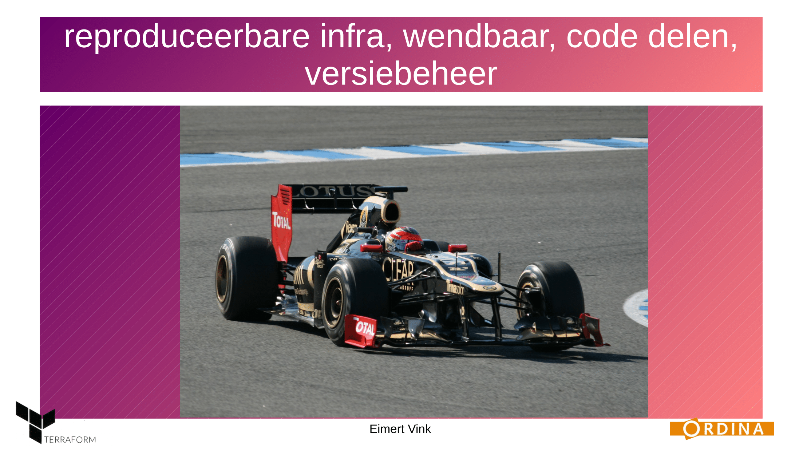
</script></section><section data-markdown><script type="text/template">
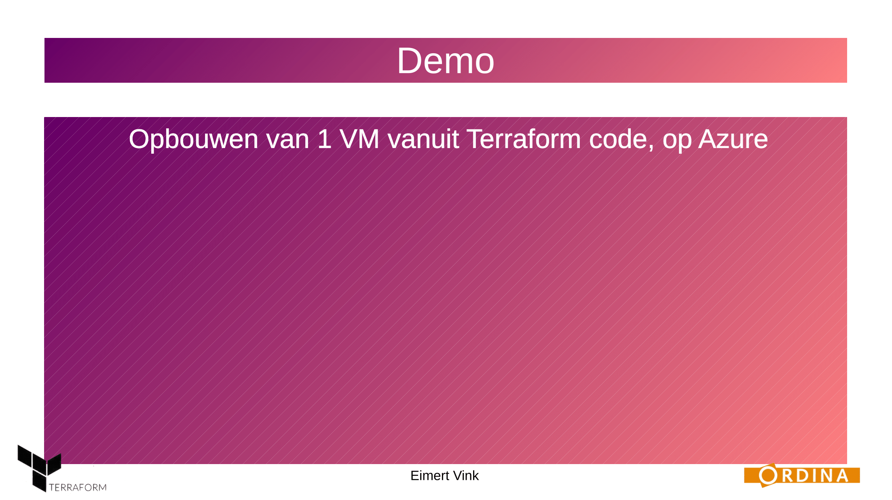
</script></section><section data-markdown><script type="text/template">
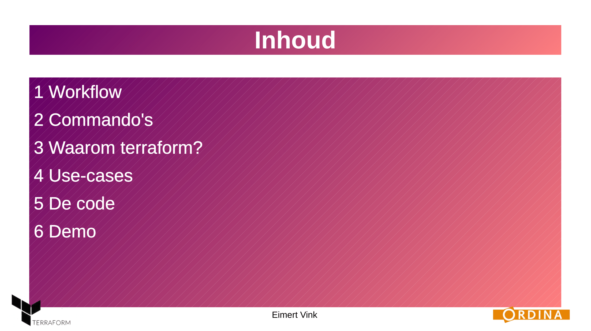
</script></section></section><section ><section data-markdown><script type="text/template">
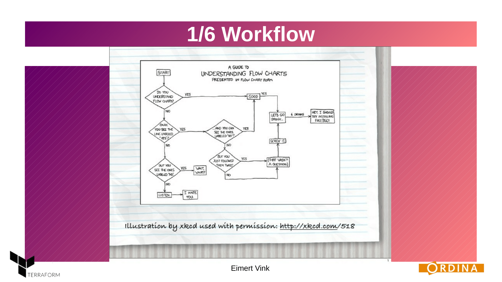
</script></section><section data-markdown><script type="text/template">
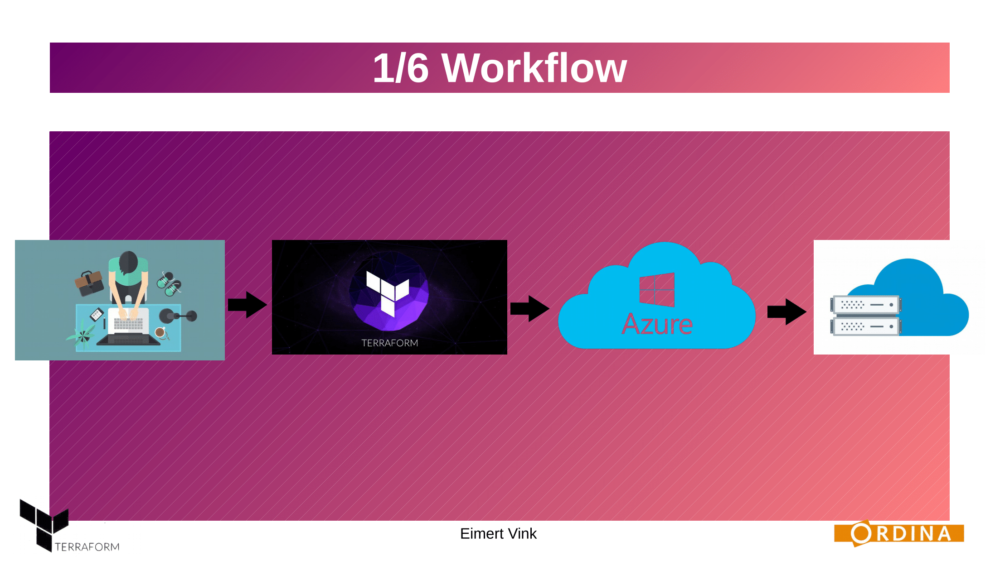
</script></section><section data-markdown><script type="text/template">

</script></section><section data-markdown><script type="text/template">
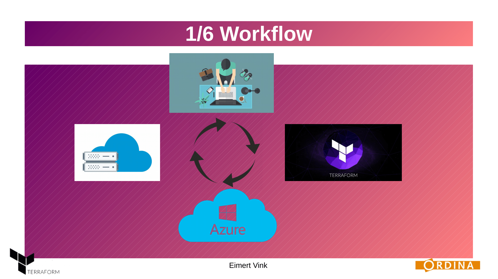
</script></section><section data-markdown><script type="text/template">

</script></section><section data-markdown><script type="text/template">
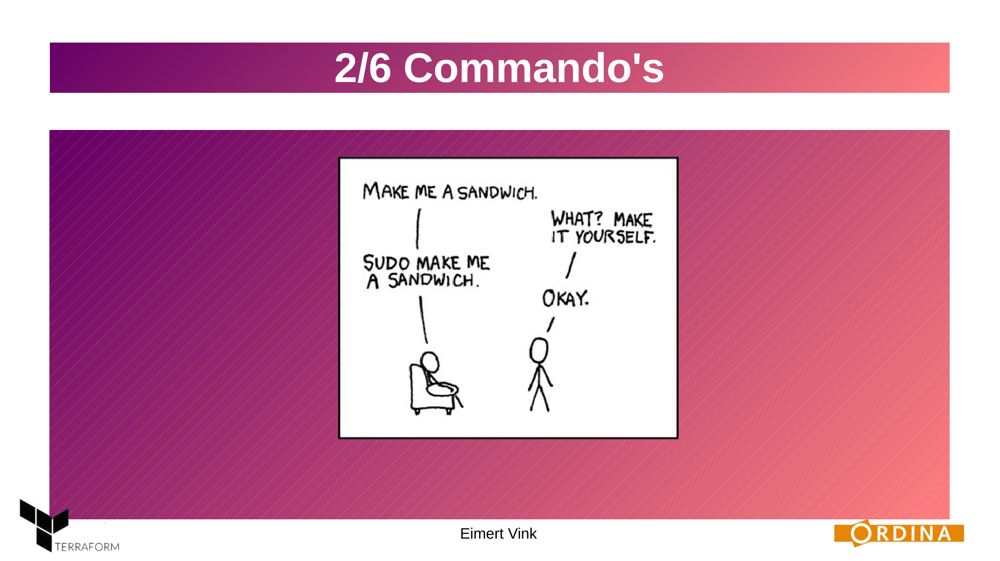
</script></section></section><section ><section data-markdown><script type="text/template">
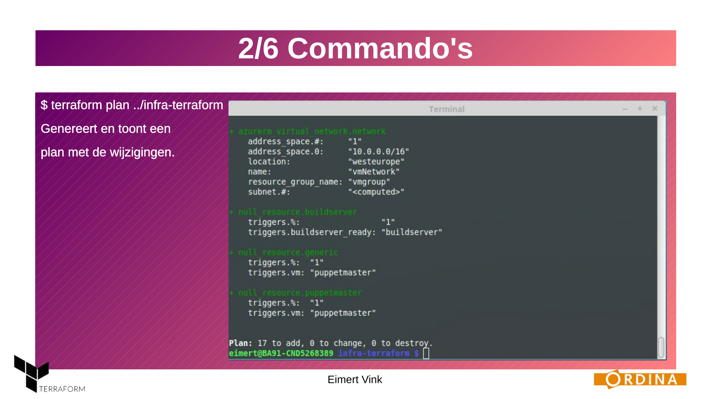
</script></section><section data-markdown><script type="text/template">

</script></section><section data-markdown><script type="text/template">
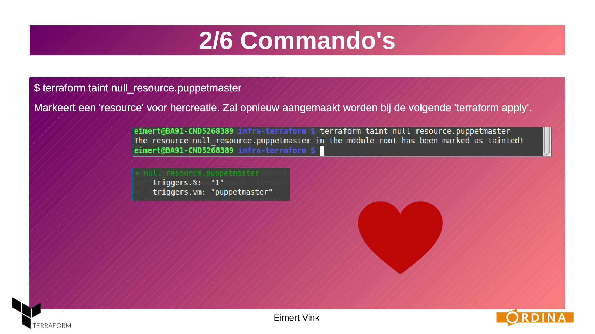
</script></section><section data-markdown><script type="text/template">
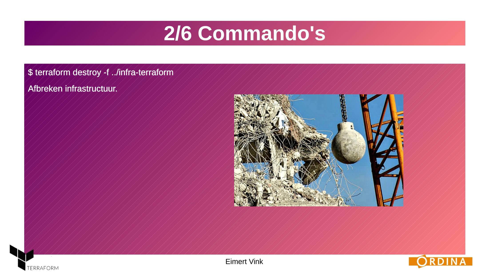
</script></section></section><section ><section data-markdown><script type="text/template">

</script></section><section data-markdown><script type="text/template">

</script></section><section data-markdown><script type="text/template">
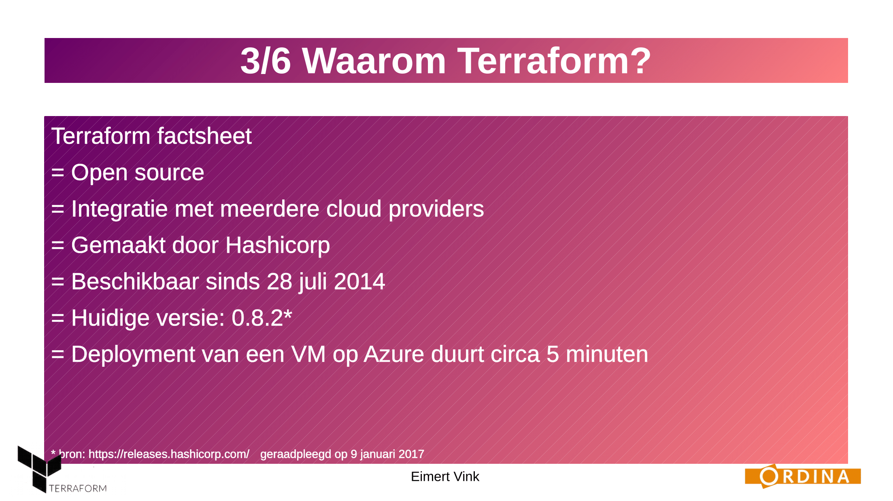
</script></section><section data-markdown><script type="text/template">

</script></section><section data-markdown><script type="text/template">

</script></section><section data-markdown><script type="text/template">
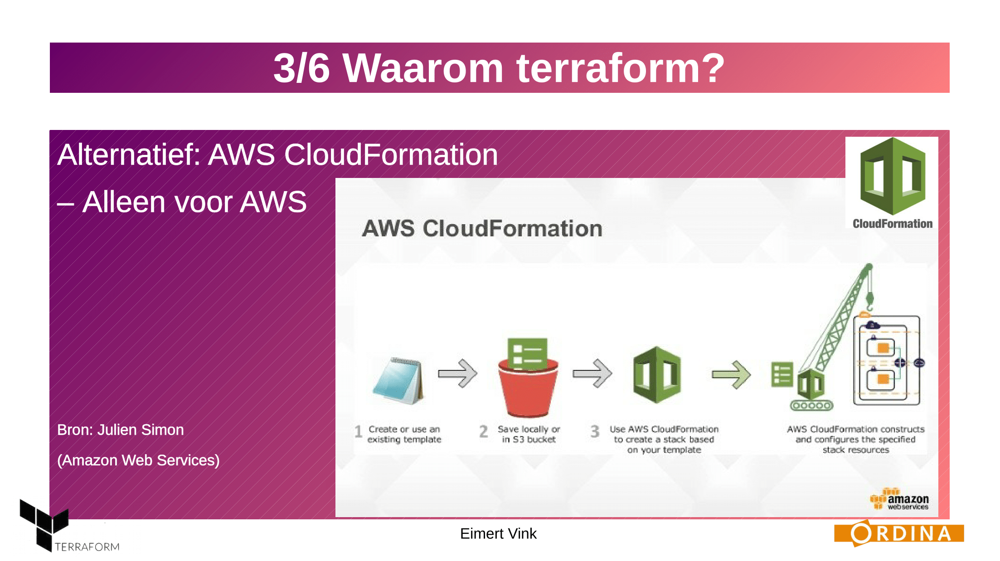
</script></section></section><section ><section data-markdown><script type="text/template">

</script></section><section data-markdown><script type="text/template">
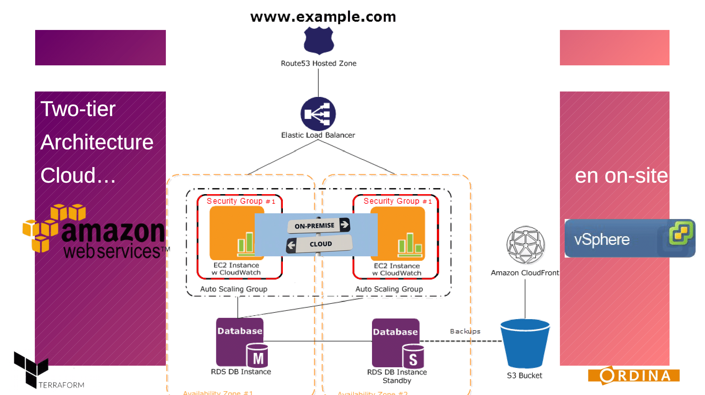
</script></section></section><section ><section data-markdown><script type="text/template">

</script></section><section data-markdown><script type="text/template">
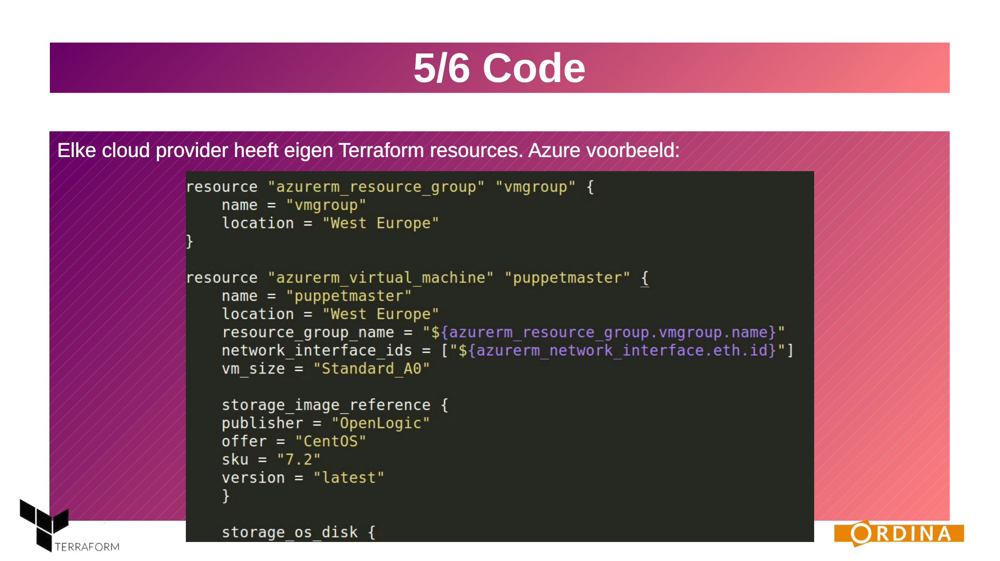
</script></section></section><section  data-markdown><script type="text/template">
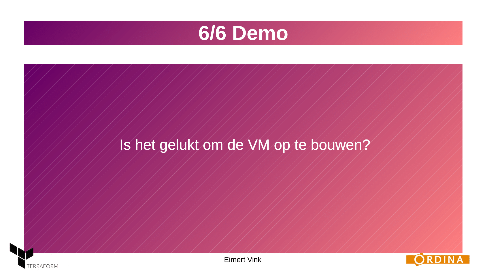
</script></section><section ><section data-markdown><script type="text/template">
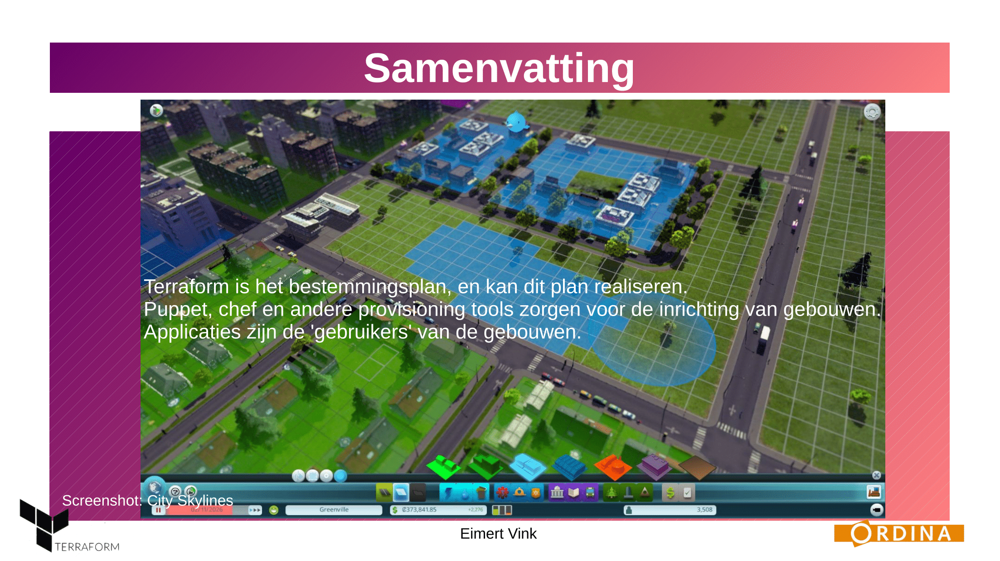
</script></section><section data-markdown><script type="text/template">

</script></section></section></div>
    </div>

    <script src="./dist/reveal.js"></script>

    <script src="./plugin/markdown/markdown.js"></script>
    <script src="./plugin/highlight/highlight.js"></script>
    <script src="./plugin/zoom/zoom.js"></script>
    <script src="./plugin/notes/notes.js"></script>
    <script src="./plugin/math/math.js"></script>
    <script>
      function extend() {
        var target = {};
        for (var i = 0; i < arguments.length; i++) {
          var source = arguments[i];
          for (var key in source) {
            if (source.hasOwnProperty(key)) {
              target[key] = source[key];
            }
          }
        }
        return target;
      }

      // default options to init reveal.js
      var defaultOptions = {
        controls: true,
        progress: true,
        history: true,
        center: true,
        transition: 'default', // none/fade/slide/convex/concave/zoom
        plugins: [
          RevealMarkdown,
          RevealHighlight,
          RevealZoom,
          RevealNotes,
          RevealMath
        ]
      };

      // options from URL query string
      var queryOptions = Reveal().getQueryHash() || {};

      var options = extend(defaultOptions, {"transition":"slide","backgroundTransition":"slide"}, queryOptions);
    </script>


    <script>
      Reveal.initialize(options);
    </script>
  </body>
</html>
